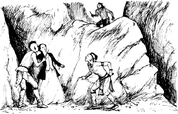

12
Người Mohican Cuối Cùng
Listen to Part 1:
Magua và Cora bước vào khu rừng. Họ đi về phía ngôi làng của người Huron.
Một tiếng sau, Mắt Diều Hâu, Duncan và Uncas lần theo dấu vết của Magua. Hai trăm chiến binh Delaware trẻ tuổi đi cùng ba người bạn. Alice ở lại ngôi làng của người Delaware.
Mắt Diều Hâu nói với Uncas.
Ông nói: "Thiếu tá Heyward và tôi sẽ tìm Chingachgook và Tướng Munro. Họ đang an toàn trong rừng. Uncas, hãy mang theo những chiến binh Delaware đi cùng. Lần theo dấu vết của Magua. Cẩn thận! Sẽ có rất nhiều người Huron trong rừng. Chúng ta sẽ gặp con ở ngôi làng của người Huron.
"Magua sẽ đưa Cora đến hang động trên đồi", Mắt Diều Hâu nói. "Chúng ta sẽ tìm thấy cô ấy! Chúng ta sẽ giúp cô ấy!"
"Đi thôi", Duncan nói.

Mắt Diều Hâu và Duncan sớm tìm thấy Chingachgook và Munro. Họ nhanh chóng kể cho Munro nghe câu chuyện của mình. Sau đó, bốn người đàn ông đến ngôi làng của người Huron. Họ bước lên đồi hướng về phía hang động.
Đột nhiên, họ nghe thấy tiếng la hét và tiếng khóc. Họ nhìn xuống ngôi làng. Uncas và những chiến binh Delaware đang chiến đấu với người Huron trong làng. Sau đó, Magua và một số người Huron chạy lên đồi. Họ đang đến hang động. Uncas đang chạy đuổi theo họ. Mắt Diều Hâu và các bạn của mình chiến đấu với người Huron. Cuộc chiến thật khủng khiếp, nhưng Magua đã trốn thoát.
Sau đó, Mắt Diều Hâu, Duncan, Munro, người Mohican và bạn của họ lại nhìn thấy Magua. Hắn đang ở cùng một người Huron khác. Họ đang ở trước cửa hang. Hai người da đỏ đang kéo Cora ra khỏi hang.
Listen to Part 2:
"Cora!", Duncan hét lên. "Cora ở đằng kia!"
Uncas chạy về phía những tảng đá phía trên hang. Cora đã dừng lại trước cửa hang.
Magua rút dao ra. Hắn quay sang Cora.
Hắn hét lên: "Phụ nữ kia! Ngươi sẽ trở thành vợ của Magua chứ? Hay ngươi sẽ chết?"
"Giết em đi, Magua!", Cora nói. "Em sẽ không đi với anh đâu!"

Bỗng nhiên có tiếng hét. Uncas đang đứng trên những tảng đá cao hơn họ. Magua nhìn lên. Người Huron kia quay sang Cora. Hắn đâm dao vào cô và giết chết cô.
Magua hét lên tức giận. Hắn giơ dao lên giết người Huron. Sau đó, Uncas nhảy lên người Magua. Họ đánh nhau. Nhưng Magua quay lại nhanh chóng. Hắn đâm Uncas bốn nhát dao. Người Mohican trẻ tuổi đứng yên một lúc. Sau đó, anh ta ngã dưới chân Magua - đã chết.
Mắt Diều Hâu nhìn thấy Uncas ngã xuống. Người trinh sát chạy về phía Magua. Magua chạy lên đường. Kẻ thù của hắn ở dưới hắn. Magua trèo lên những tảng đá. Sau đó, hắn quay lại nhìn xuống.
Mắt Diều Hâu dừng chạy. Ông nâng khẩu súng dài của mình lên. Magua nhảy về phía một tảng đá cao hơn và Mắt Diều Hâu bắn. Ngón tay của Magua chạm vào tảng đá. Nhưng viên đạn từ khẩu súng của Mắt Diều Hâu đã giết chết hắn. Và thi thể hắn rơi xuống và xuống những tảng đá.
Listen to Part 3:
Một ngày sau, Tướng Munro, Duncan và Alice đứng bên mộ của Uncas và Cora. Họ buồn bã và im lặng. Sau đó, họ chào tạm biệt Mắt Diều Hâu, Chingachgook và những chiến binh Delaware. Và họ bước vào rừng.
Chingachgook nhìn Mắt Diều Hâu. Ông nói: "Giờ thì mọi người trong bộ lạc của tôi đã ra đi hết rồi. Tôi đơn độc rồi".
Mắt Diều Hâu nói: "Không, Uncas đã ra đi. Nhưng ông không đơn độc". Ông đặt tay lên tay Chingachgook.
Những giọt nước mắt của hai người bạn rơi xuống mộ của Uncas.
Vào năm 1758, Tướng Munro qua đời. Alice kết hôn với Duncan Heyward và họ sống hạnh phúc bên nhau.
Từ thời điểm đó, những người Delaware kể cho con cái họ câu chuyện về người phụ nữ Anh và người Mohican trẻ. Và họ kể cho con cái họ lời của Tamenund, vị tù trưởng già -
"Thời đại của người da đỏ đã qua. Chúng ta đã chiến đấu vì vùng đất của mình. Nhưng giờ thì có rất nhiều người da trắng - nhiều như lá trên cây. Tôi đã sống quá lâu. Tôi đã chứng kiến người Mohican cuối cùng!"
Mục lục
- Bìa
- Tiêu đề
- Mục lục
- Ghi chú về tác giả
- Ghi chú về câu chuyện
- Các nhân vật trong câu chuyện
- 1 Hai chị em
- 2 Lạc trong rừng
- 3 Trận chiến tại Glenn’s Falls
- 4 ‘Tôi là tù trưởng người Huron’
- 5 Fort William Henry
- 6 ‘Khi nào viện quân mới tới
- 7 Con đường
- 8 Người thầy thuốc
- 9 Trong ngôi làng của người Huron
- 10 Con gấu
- 11 Tù trưởng già
- 12 Người Mohican cuối cùng
- Bản quyền